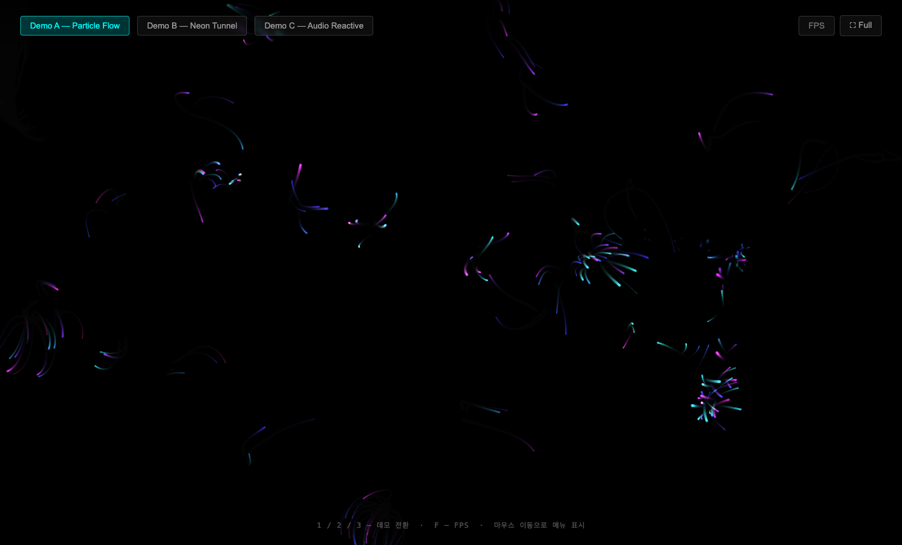
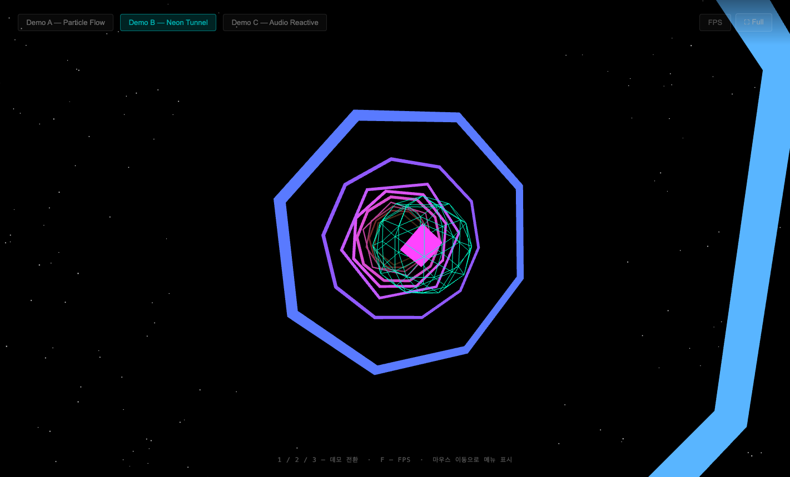
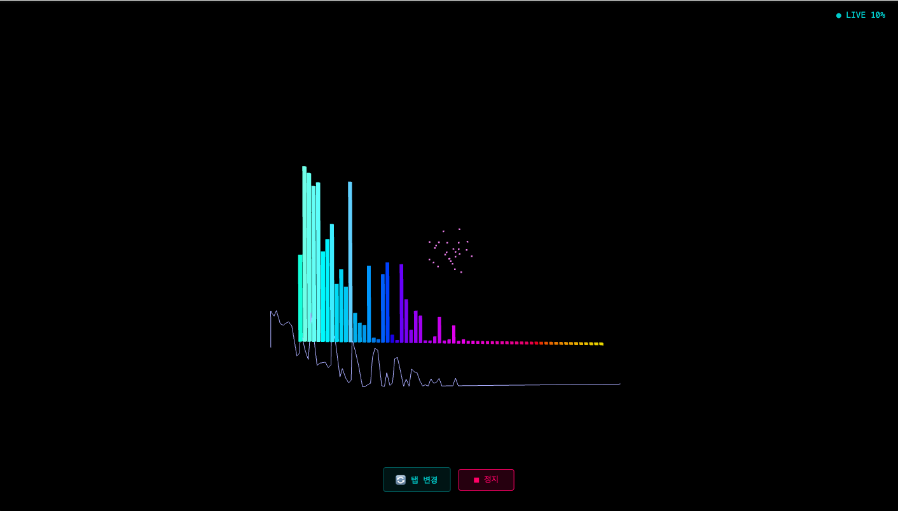
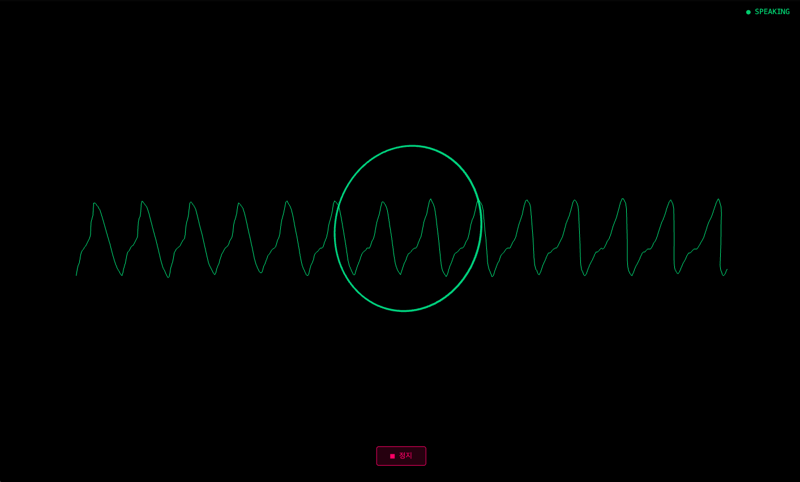
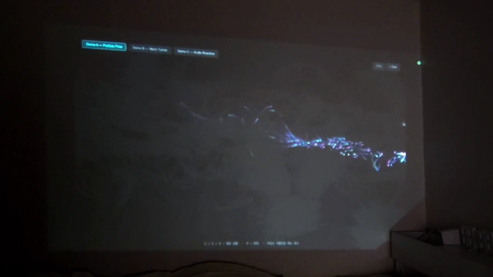
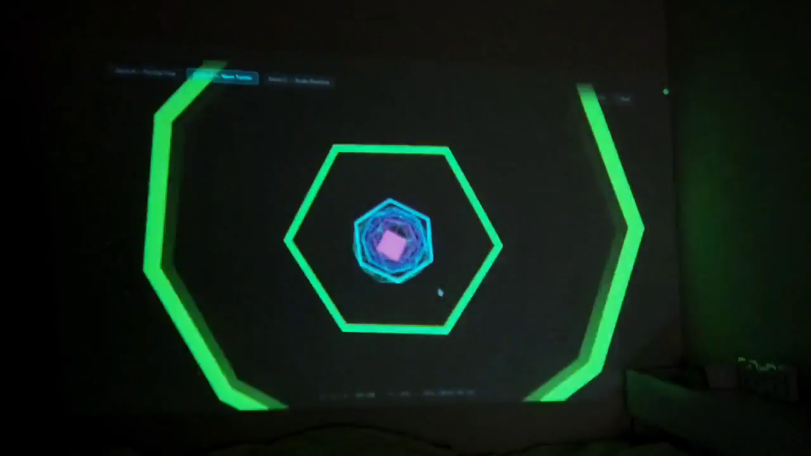
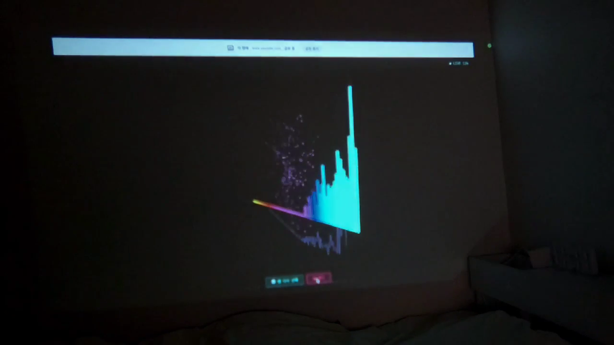

WebGL 기반 인터랙티브 프로젝션 아트 PoC
2026-05-29 킥오프 · 2026-05-30 완료
마우스 입력에 반응하는 실시간 비주얼 데모 3종을
Chrome + 프로젝터 환경에서 안정적으로 동작시킨다.
| # | Open Question | 결정 |
|---|---|---|
| OQ-1 | 라이브러리 전략 — p5.js vs Three.js 단일/분리 | Demo A → p5.js / Demo B·C → Three.js |
| OQ-2 | Demo C 오디오 소스 방식 | 번들 mp3 (기본) + 마이크 입력 (선택) 병행 |
| OQ-3 | 프레임률 목표 수치 | 60fps 고정 — requestAnimationFrame 기본값 |
| OQ-4 | 앱 디렉토리 신설 기술 스택 | Vite + React 18 + TypeScript (CDN 불채택) |
| # | 결정 내용 | 담당 |
|---|---|---|
| 1 |
Vite + React 18 + TypeScript 기반 앱 구성 운용·확장성 고려, CDN 방식(타입 없음·번들 최적화 불가) 불채택 |
PM |
| 2 |
Three.js 통합: @react-three/fiber + @react-three/dreiDemo B (NeonTunnel), Demo C (AudioReactiveVisual) |
FE |
| 3 |
p5.js instance mode로 React useEffect 내 마운트 Demo A (ParticleFlow) — 글로벌 네임스페이스 오염 방지 |
FE |
| 4 |
테스트 코드 작성 필수 — Vitest + @testing-library/reactvitest run 0 failures 통과를 수용 기준에 포함
|
FE + QA |
| 5 |
React.lazy로 데모별 번들 분리 p5.js + Three.js 동시 의존 번들 크기 리스크 완화 |
FE |
pixelDensity(1)blendMode(ADD) 글로우@react-three/fiber + @react-three/dreiuseAudioAnalyzer — 음악/탭/음성 3모드getDisplayMedia 시스템 오디오
p5.js · 적응형 파티클 · blendMode ADD

Three.js · 16링 · 마우스 시점 lerp

Web Audio API · getDisplayMedia · 주파수 바 + 파형

마이크 입력 · 노이즈 게이트 · 오실로스코프 + 에너지 링

0s파티클 플로우 · HDMI 출력

15s네온 터널 · 기하학 · 녹색 발광

45s오디오 반응형 · 주파수 바 풀 반응
기술 스택
| 영역 | 선택 |
|---|---|
| 번들러 | Vite 6 |
| UI | React 18 + TypeScript |
| 2D 그래픽 | p5.js (instance mode) |
| 3D 그래픽 | @react-three/fiber + drei |
| 오디오 | Web Audio API (브라우저 내장) |
| 테스트 | Vitest + @testing-library/react |
| 테스트 환경 | jsdom + Canvas/WebGL/AudioContext mock |
디렉토리 구조
apps/projection-art/src/demos/ — ParticleFlow / NeonTunnel / AudioReactivesrc/hooks/ — useAudioAnalyzer / useFrameRate / useFullscreensrc/utils/ — colorUtils (hslToRgb, lerpColor, mapRange)src/components/ — FpsOverlaysrc/types/ — DemoType / MousePosition / AudioAnalyzerStatesrc/test/setup.ts — Canvas / WebGL / AudioContext mockpnpm test 결과| 파일 | 테스트 수 | 커버 범위 |
|---|---|---|
colorUtils.test.ts | 21 | hslToRgb, amplitudeToColor, lerpColor, randomVelocity, mapRange |
useAudioAnalyzer.test.ts | 9 | AudioContext mock, activate/deactivate, 주파수 범위, 마이크 입력 |
useFrameRate.test.ts | 6 | FPS 집계, enabled 토글, reset, 초기 상태 |
ParticleFlow.test.tsx | 5 | 마운트/언마운트, p5 동적 import mock, mousePos props |
NeonTunnel.test.tsx | 5 | R3F Canvas mock, R3F drei mock, 마우스 props |
AudioReactiveVisual.test.tsx | 15 | 모드 선택(음악/탭/음성), 파일 피커, activate/deactivate, active 상태 |
FpsOverlay.test.tsx | 7 | visible 토글, FPS 색상 코딩, minFps Infinity 처리 |
App.test.tsx | 11 | 데모 전환, FPS 토글, 전체화면, 마우스 이벤트 |
완료 현황
| 역할 | 완료 | 전체 | 비율 |
|---|---|---|---|
| 수용 기준 | 10 | 10 | 100% |
| FE | 11 | 11 | 100% |
| PERF | 2 | 2 | 100% |
| QA | 5 | 5 | 100% |
| 합계 | 28 | 28 | 100% |
이월 항목
다음 스프린트 확장 후보
vite build --analyze)Sprint projection-art/2 우선 후보
알려진 리스크 & 기술 부채
@react-three/fiber 8.x 고정 — React 18 호환 (v9는 React 19 내부 API 의존으로 불채택)vite build --analyze 실행 권장장기 확장 방향
감사합니다